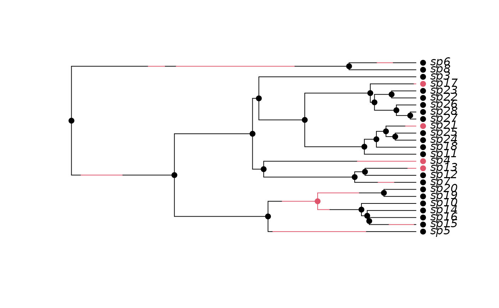

make.mkn.RdPrepare to run a Mk2/Mk-n model on a phylogenetic tree and
binary/discrete trait data. This fits the Pagel 1994 model,
duplicating the ace function in ape. Differences with that
function include (1) alternative root treatments are possible, (2)
easier to tweak parameter combinations through
constrain, and (3) run both MCMC and MLE fits to
parameters. Rather than exponentiate the Q matrix, this
implementation solves the ODEs that this matrix defines. This may or
may not be robust on trees leading to low probabilities.
An ultrametric bifurcating phylogenetic tree, in
ape “phylo” format.
A vector of character states, each of which must be 0 or
1 for make.mk2 or 1 to k for make.mkn.
Number of states to model.
The states vector is always checked to make sure
that the values are integers on 0:1 (mk2) or
1:k (mkn). If strict is TRUE (the
default), then the additional check is made that every state
is present. The likelihood models tend to be poorly behaved where
states are missing, but there are cases (missing intermediate states
for meristic characters) where allowing such models may be useful.
List of control parameters for the ODE solver. See Details below.
make.mk2 and make.mkn return functions of class mkn.
These functions have argument list (and default values)
f(pars, pars, prior=NULL, root=ROOT.OBS, root.p=NULL, fail.value=NULL)
The arguments are interpreted as
pars For make.mk2, a vector of two parameters,
in the order q01, q10. For make.mkn, a
vector of k(k-1) parameters, in the order
q12,q13,...q1k, q21,q23,...,q2k,...qk(k-1), corresponding
to the off-diagonal elements of the Q matrix in row order.
The order of parameters can be seen by running
argnames(f).
prior: a valid prior. See make.prior for
more information.
root: Behaviour at the root (see Maddison et al. 2007,
FitzJohn et al. 2009). The possible options are
ROOT.FLAT: A flat prior, weighting all variables
equally.
ROOT.EQUI: Use the equilibrium distribution
of the model (not yet implemented).
ROOT.OBS: Weight \(D_0\) and
\(D_1\) by their relative probability of observing the
data, following FitzJohn et al. 2009:
$$D = \sum_i D_i \frac{D_i}{\sum_j D_j}$$
ROOT.GIVEN: Root will be in state i
with probability root.p[i].
ROOT.BOTH: Don't do anything at the root,
and return both values. (Note that this will not give you a
likelihood for use with ML or MCMC functions!).
root.p: Vector of probabilities/weights to use when
ROOT.GIVEN is specified. Must be of length k (2 for
make.mk2).
intermediates: Add intermediates to the returned value as
attributes. Currently undocumented.
With more than 9 states, qij can be ambiguous (e.g. is q113 1->13 or 11->3?). To avoid this, the numbers are zero padded (so that the above would be q0113 or q1103 for 1->13 and 11->3 respectively). It might be easier to rename the arguments in practice though.
The control argument controls how the calculations will be
carried out. It is a list, which may contain elements in
make.bisse. In addition, the list element method
may be present, which selects between three different ways of
computing the likelihood:
method="exp": Uses a matrix exponentiation approach,
where all transition probabilities are computed (i.e., for a rate
matrix \(Q\) and time interval \(t\), it computes \(P =
exp(Qt)\)).
method="mk2": As for exp, but for 2 states only.
Faster, direct, calculations are available here, rather than
numerically computing the exponentiation.
method="ode": Uses an ODE-based approach to compute
only the \(k\) variables over time, rather than the \(k^2\)
transition probabilities in the exp approach. This will be
much more efficient when k is large.
constrain for making submodels, find.mle
for ML parameter estimation, mcmc for MCMC integration,
and make.bisse for state-dependent birth-death models.
## Simulate a tree and character distribution. This is on a birth-death
## tree, with high rates of character evolution and an asymmetry in the
## character transition rates.
pars <- c(.1, .1, .03, .03, .1, .2)
set.seed(3)
phy <- trees(pars, "bisse", max.taxa=25, max.t=Inf, x0=0)[[1]]
## Here is the 25 species tree with the true character history coded.
## Red is state '1', which has twice the character transition rate of
## black (state '0').
h <- history.from.sim.discrete(phy, 0:1)
plot(h, phy)

## Maximum likelihood parameter estimation:
p <- c(.1, .1) # initial parameter guess
if (FALSE) { # \dontrun{
lik <- make.mk2(phy, phy$tip.state)
fit.mk2 <- find.mle(lik, p)
coef(fit.mk2) # q10 >> q01
logLik(fit.mk2) # -10.9057
## This can also be done using the more general Mk-n.
## This uses an approximation for the likelihood calculations. make.mkn
## assumes that states are numbered 1, 2, ..., k, so 1 needs to be added
## to the states returned by trees.
lik.mkn <- make.mkn(phy, phy$tip.state + 1, 2)
fit.mkn <- find.mle(lik.mkn, p)
fit.mkn[1:2]
## These are the same (except for the naming of arguments)
all.equal(fit.mkn[-7], fit.mk2[-7], check.attr=FALSE, tolerance=1e-7)
## Equivalence to ape's \link{ace} function:
model <- matrix(c(0, 2, 1, 0), 2)
fit.ape <- ace(phy$tip.state, phy, "discrete", model=model, ip=p)
## To do the comparison, we need to rerun the diversitree version with
## the same root conditions as ape.
fit.mk2 <- find.mle(lik, p, root=ROOT.GIVEN, root.p=c(1,1))
## These are the same to a reasonable degree of accuracy, too (the
## matrix exponentiation is slightly less accurate than the ODE
## solving approach. The make.mk2 version is exact)
all.equal(fit.ape[c("rates", "loglik")], fit.mk2[1:2],
check.attributes=FALSE, tolerance=1e-4)
## The ODE calculation method may be useful when there are a large
## number of possible states (say, over 20).
lik.ode <- make.mkn(phy, phy$tip.state + 1, 2,
control=list(method="ode"))
fit.ode <- find.mle(lik.ode, p)
fit.ode[1:2]
all.equal(fit.ode[-7], fit.mkn[-7], tolerance=1e-7)
} # }